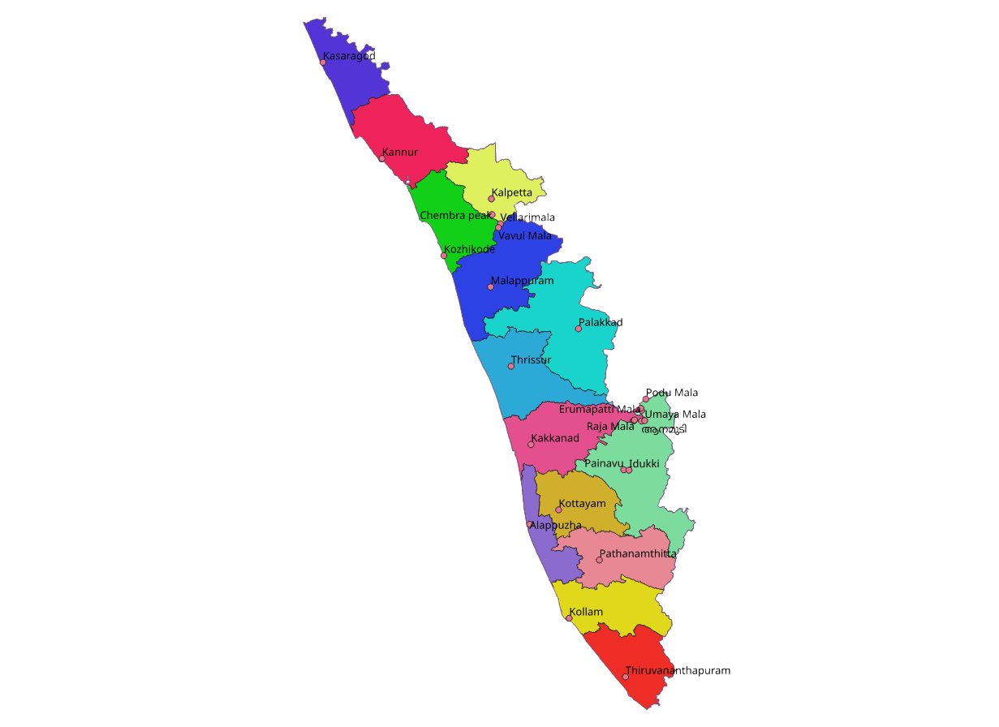

| Name: | Kerala |
|---|---|
| Capital: | Tiruvanandhapuram |
| Language: | Malayalam |
| Chief Minister: | Pinarayi Vijayan |
| Total District: | 14 |
| Population: | ~35 million (as per 2011 census) |
| Formation: | 1 November 1956 (Kerala Piravi) |
| Area: | 38,863 km² (21st largest in India) |
| Borders: | Tamil Nadu, Karnataka, Arabian Sea |
| CoastLine: | ~580 km along the Arabian Sea |
Know more